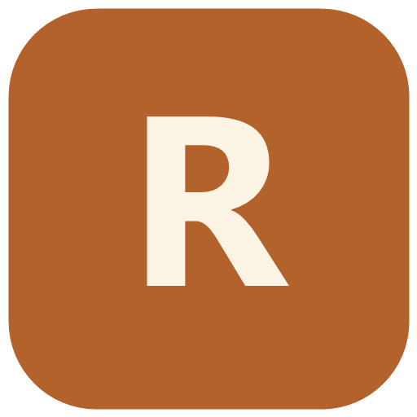

RM ClientУкажите адрес сервера и API-ключ вашей учётной записи.
/projects/… в конце
URL Redmine — откройте Redmine в браузере и скопируйте адрес из адресной строки до первого слэша после домена. Пример: https://redmine.company.ru.
API key — в правом верхнем углу нажмите «Моя учётная запись», найдите «Ключ доступа к API» и нажмите «Показать».
Скопируйте показанный ключ в поле API key выше